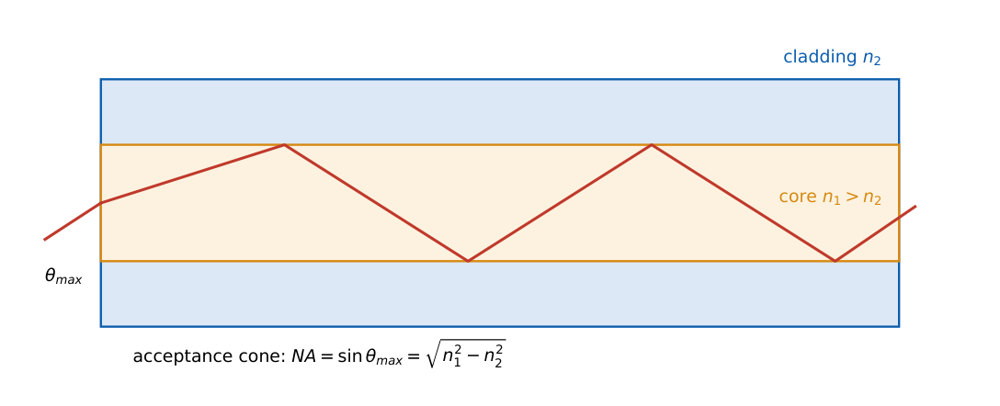

Wireless and Optical Links: Link Budget, Fading and Fibre
In this chapter
Free-space path loss and Friis formula, link-budget arithmetic in dB, Doppler shift, coherence time/bandwidth and flat versus selective fading, Rayleigh fading penalty, cellular frequency reuse, and optical-fibre numerical aperture, attenuation and dispersion limits. This chapter covers the “fundamentals of wireless and optical links” part of the syllabus.
11.1 Free-space propagation
\(P_r=P_tG_tG_r\left(\dfrac{\lambda}{4\pi d}\right)^2\), \(\lambda=c/f\).
Free-space path loss \(L_{fs}=\left(\dfrac{4\pi d}\lambda\right)^2\); in dB with \(d\) in metres and \(f\) in hertz: \(\;L_{fs}(\text{dB})=20\log_{10}d+20\log_{10}f-147.55\).
Equivalently \(L_{fs}=92.45+20\log_{10}f_{GHz}+20\log_{10}d_{km}\). Doubling the distance adds 6 dB.
EIRP \(=P_tG_t\). Effective aperture of an antenna \(A_e=G\lambda^2/4\pi\).
\(f=2.4\) GHz, \(d=100\) m: \(L_{fs}=40+187.6-147.55=80.05\) dB.
11.2 Link budget
Add gains and subtract losses in dB: \[ P_r(\text{dBm})=P_t+G_t+G_r-L_{path}-L_{other},\qquad \text{margin}=P_r-S_{min}. \] Receiver sensitivity \(S_{min}=-174+10\log_{10}B+NF+\text{SNR}_{req}\) (Chapter 2). The link closes if \(P_r\ge S_{min}\); the excess is the fade margin.
\(P_t=20\) dBm, \(G_t=G_r=3\) dBi, \(d=5\) km: \(L_{fs}=20\log5000+20\log(9\times10^8)-147.55=105.5\) dB, \(P_r=26-105.5=-79.5\) dBm. Noise floor for \(B=200\) kHz, \(NF=6\) dB: \(-174+53+6=-115\) dBm. SNR \(=35.5\) dB.
Real channels. Log-distance model: \(PL(d)=PL(d_0)+10n\log_{10}(d/d_0)+X_\sigma\), with exponent \(n=2\) (free space), \(3\)–\(4\) (urban), \(X_\sigma\) log-normal shadowing (std. \(\approx8\) dB). For \(n=3.5\) a tenfold distance adds \(35\) dB. The two-ray ground-reflection model gives \(PL\propto d^4\) at large distances.
11.3 Multipath fading
Reflections, diffraction and scattering produce multiple delayed copies; they add constructively or destructively (small-scale fading).
Doppler shift \(f_d=\dfrac vcf_c\) (max). Example: \(v=100\) km/h \(=27.8\) m/s, \(f_c=900\) MHz: \(f_d=83.3\) Hz.
Coherence time \(T_c\approx\dfrac{0.423}{f_d}\) (time over which the channel is nearly constant): \(5.1\) ms in the example.
Delay spread \(\sigma_\tau\); coherence bandwidth \(B_c\approx\dfrac1{5\sigma_\tau}\): \(\sigma_\tau=1\,\mu\)s \(\Rightarrow B_c=200\) kHz.
Flat fading: signal bandwidth \(B_s\ll B_c\) (all frequencies fade together, no ISI). Frequency-selective fading: \(B_s>B_c\) (ISI, needs equalisation, RAKE or OFDM).
Slow fading: symbol time \(T_s\ll T_c\); fast fading: \(T_s>T_c\).
Envelope statistics: Rayleigh (no line-of-sight): \(f(r)=\dfrac r{\sigma^2}e^{-r^2/2\sigma^2}\); Rician (line-of-sight with \(K\) factor); Nakagami-\(m\) generalises both.
BPSK over flat Rayleigh fading: \(P_b=\dfrac12\left[1-\sqrt{\dfrac{\bar\gamma}{1+\bar\gamma}}\right]\approx\dfrac1{4\bar\gamma}\) (inverse-linear in the average SNR \(\bar\gamma=\bar E_b/N_0\)).
At \(\bar\gamma=10\) dB: \(P_b=0.0233\), versus \(3.9\times10^{-6}\) in AWGN: fading costs tens of dB. Remedies: diversity (time, frequency, space), with order-\(L\) diversity \(P_b\propto\bar\gamma^{-L}\); maximal-ratio combining gain; coding and interleaving; power control; MIMO.
11.4 Cellular concepts (supplementary)
- Frequency reuse: cells arranged in clusters of \(N=i^2+ij+j^2\) cells (e.g. 3, 4, 7, 12); co-channel reuse distance \(D=R\sqrt{3N}\); for \(N=7\), \(D/R=4.58\). Larger \(N\): less interference, lower capacity.
- Handoff, sectoring and cell splitting increase capacity. Multiple access: FDMA, TDMA (GSM), CDMA (spreading, processing gain \(G_p=B_{ss}/R_b\)), OFDMA.
11.5 Optical fibre links

Numerical aperture \(NA=\sqrt{n_1^2-n_2^2}\approx n_1\sqrt{2\Delta}\), \(\Delta=\dfrac{n_1-n_2}{n_1}\); acceptance angle \(\theta_{max}=\sin^{-1}(NA)\) (from air).
Normalised frequency \(V=\dfrac{2\pi a}\lambda NA\); single-mode operation for \(V<2.405\). Number of modes (multimode, step index) \(\approx V^2/2\).
Attenuation: \(P(L)=P(0)10^{-\alpha L/10}\) (\(\alpha\) dB/km); low-loss windows at \(1310\) and \(1550\) nm (\(\approx0.35\) and \(0.2\) dB/km).
Modal dispersion (step-index multimode): \(\Delta\tau\approx\dfrac{L(n_1-n_2)}c\); maximum bit rate \(B\lesssim\dfrac1{2\Delta\tau}\). Chromatic dispersion \(\Delta\tau=D\,L\,\Delta\lambda\) (\(D\) in ps/nm/km). Single-mode fibre removes modal dispersion.
\(n_1=1.48\), \(n_2=1.46\): \(NA=\sqrt{2.1904-2.1316}=0.2425\), \(\theta_{max}=14.0^\circ\). Modal dispersion over 1 km: \(\Delta\tau=1000\times0.02/(3\times10^8)=66.7\) ns, so \(B\lesssim7.5\) Mbps for a 1 km multimode link.
Power budget: transmitter \(0\) dBm, fibre \(0.25\) dB/km \(\times80\) km \(=20\) dB, two connectors \(1\) dB, receiver sensitivity \(-28\) dBm: margin \(=0-20-1+28=7\) dB.
Components: LED (multimode, low cost, wide spectrum) and laser diode (single-mode, narrow spectrum) sources; PIN photodiode and avalanche photodiode detectors; optical amplifiers (EDFA, 1550 nm); WDM multiplies capacity by carrying many wavelengths.
(i) Path loss grows with \(f^2\) and \(d^2\) in free space: both enter as \(20\log\). (ii) Delay spread governs frequency selectivity; Doppler governs time variation. (iii) \(NA\) uses \(n_1^2-n_2^2\), not \((n_1-n_2)\). (iv) Rayleigh fading BER decays only as \(1/\bar\gamma\) (a straight line of slope \(-1\) on log scales). (v) In link budgets add gains in dB, subtract losses in dB.
\(L_{fs}=92.45+20\log f_{GHz}+20\log d_{km}\). \(f_d=v/\lambda\). \(B_c\approx1/(5\sigma_\tau)\). \(NA=\sqrt{n_1^2-n_2^2}\). Link budget: transmit \(-\) losses \(+\) gains \(-\) sensitivity.
11.6 GATE problems
Q1. Free-space path loss increases by how many dB when the distance doubles? (A) 3 (B) 6 (C) 12 (D) 20.
Q2. Flat fading occurs when the signal bandwidth is (A) much larger than the coherence bandwidth (B) much smaller than the coherence bandwidth (C) equal to the Doppler spread (D) zero.
Q3. Single-mode operation of a step-index fibre requires \(V<\) (A) 1 (B) 2.405 (C) 5 (D) 10.
Q4. The BER of BPSK over Rayleigh fading decreases with average SNR as (A) exponentially (B) inversely proportional (C) quadratically (D) logarithmically.
Answers: Q1 (B). Q2 (B). Q3 (B). Q4 (B).
Q5. Free-space path loss at 2.4 GHz over 100 m is (A) 60 dB (B) 80 dB (C) 100 dB (D) 120 dB.
Q6. A fibre with \(n_1=1.48\) and \(n_2=1.46\) has numerical aperture (A) 0.02 (B) 0.24 (C) 0.5 (D) 1.0.
Q7. Doppler shift for a vehicle at 100 km/h and 900 MHz carrier: (A) 8.3 Hz (B) 83 Hz (C) 830 Hz (D) 8.3 kHz.
Answers: Q5 (B). Q6 (B). Q7 (B).
Q8. Received power (dBm, one decimal) for \(P_t=20\) dBm, \(G_t=G_r=3\) dBi, path loss 105.5 dB: .
Q9. Coherence bandwidth (kHz) for an RMS delay spread of \(1\,\mu\)s (\(B_c=1/5\sigma_\tau\)): .
Q10. Link margin (dB) for \(P_t=0\) dBm, fibre loss 20 dB, connector loss 1 dB and sensitivity \(-28\) dBm: .
Answers: Q8: \(-79.5\). Q9: 200. Q10: 7.
Q11. Select the true statements. (A) Frequency-selective fading causes ISI. (B) Diversity reduces the effect of fading. (C) Rayleigh fading has a strong line-of-sight component. (D) Single-mode fibre eliminates modal dispersion.
Answers: Q11: (A), (B), (D).
T1. EIRP formula. T2. Cluster size for \(i=2,j=1\). T3. Unit for fibre chromatic dispersion \(D\).
Answers: T1: \(P_tG_t\). T2: \(N=7\). T3: ps/(nm km).
- \(P_r=P_tG_tG_r(\lambda/4\pi d)^2\); \(L_{fs}=20\log d+20\log f-147.55\); budgets in dB.
- \(f_d=v/\lambda\); \(T_c\approx0.423/f_d\); \(B_c\approx1/5\sigma_\tau\); Rayleigh BPSK \(P_b\approx1/4\bar\gamma\).
- Fibre: \(NA=\sqrt{n_1^2-n_2^2}\), \(V<2.405\) single-mode, dispersion limits bit rate, power budget.